# Load libraries
library(readxl)
library(writexl)
library(tidyverse)
library(ggpubr)
library(ggeffects)
# Load data
ELP <- read_xlsx("ELP.xlsx")
# Inspect data structure
str(ELP)21 Linear regression
21.1 Recommended reading
Specifically for linguists:
Levshina (2015: Chapter 7)
Winter (2020: Chapter 4)
General:
Heumann et al. (2022: Chapter 11)
James et al. (2021: Chapter 3)
21.2 Preparation
21.3 Introduction
Consider the distribution of the continuous variable RT (reaction times) from the ELP (English Lexicon Project) dataset. We will apply a \(\log\)-transformation to the the reaction times in order to even out the differences between extremely high and extremely low frequency counts (cf. Winter 2020: 90-94).
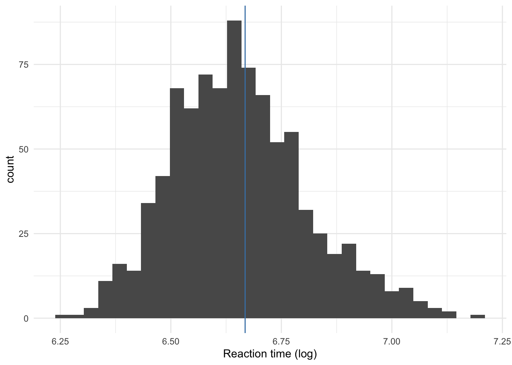
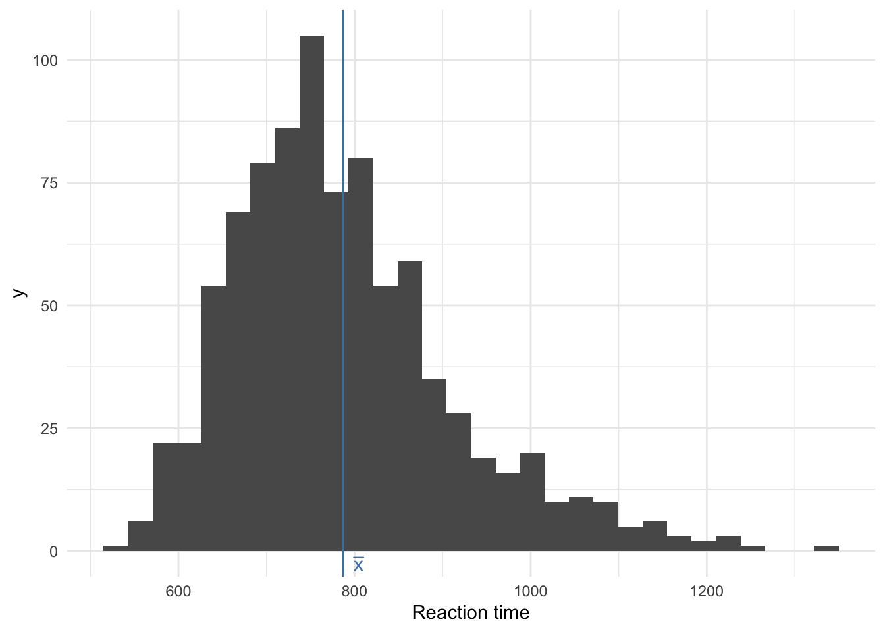
We are particularly interested in the relationship between reaction times RT and the (log-)frequency Freq of a lexical stimulus. What kind of pattern does the scatter plot below suggest?
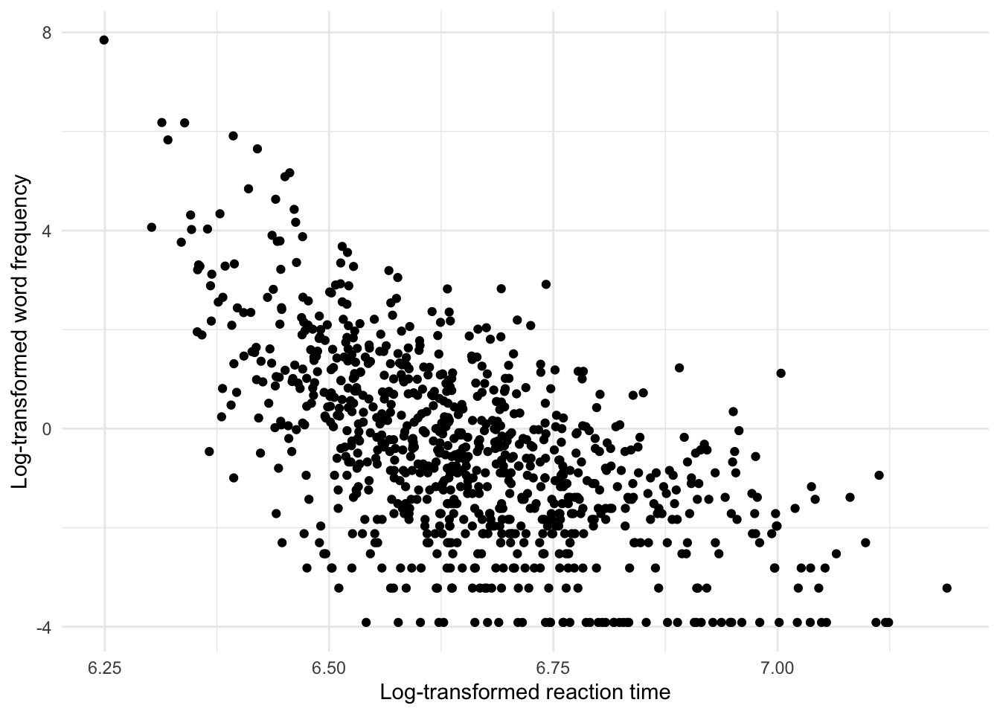
Some open questions
Can word frequency help us explain variation in reaction times?
If it can, then how could we characterise the effect of word frequency? In other words, does it increase or decrease reaction times?
What reaction times should we expect for new observations?
21.3.1 A simple statistical model
RT is the response or target that we wish to explain. We generically refer to the response as \(Y\).
Freq is the feature, input, or predictor, which we will call \(X\).
We can thus summarise our preliminary and fairly general statistical model as
\[Y = f(X) + \epsilon.\]
The term \(f(X)\) describes the contribution of \(X\) to the explanation of \(Y\). Since no model can explain everything perfectly, we expect there to be some degree of error \(\epsilon\).
21.4 Linear regression
Linear regression is a simple approach to supervised machine learning where the response variable is known.1
It assumes that the dependence of \(Y\) on \(X\) is linear, i.e., their relationship is a straight line.
This approach is suitable for numerical response variables. The predictors, however, can be either continuous or discrete.
1 If the response variable is unknown or irrelevant, we speak of unsupervised machine learning. Unsupervised models are mostly concerned with finding patterns in high-dimensional datasets with dozens or even hundreds of variables.
Although it may seem overly simplistic, linear regression is extremely useful both conceptually and practically.
21.4.1 Model with a single predictor \(X\)
The simple linear model has the general form
\[ Y = \beta_0 + \beta_1X + \epsilon. \] The model parameters (or coefficients) \(\beta_0\) and \(\beta_1\) specify the functional relationship \(f\) between \(Y\) and \(X\). The first parameter \(\beta_0\) determines the intercept of the regression line, and \(\beta_1\) indicates the slope. Once again, \(\epsilon\) captures the model error.
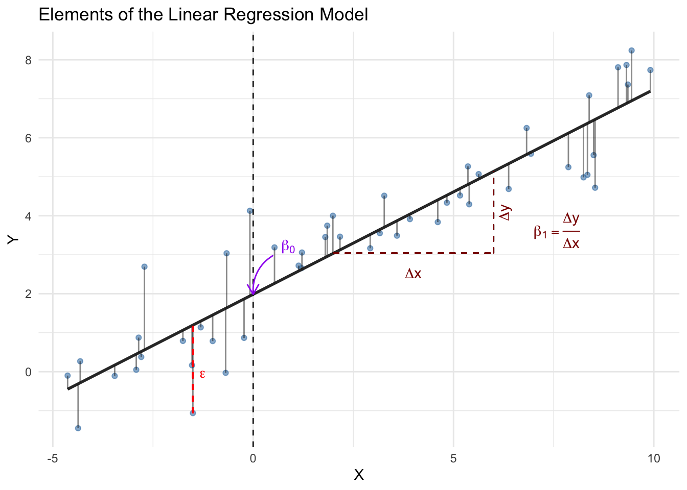
Applying the model formula to our dataset, we get the following updated regression equation:
\[ \text{Reaction time} = \beta_0 + \beta_1\text{Frequency} + \text{Model Error}. \]But how do we find the right values for the intercept and the slope? In short: We can’t. We are dealing with population parameters and can, therefore, only provide an approximation of the true relationship between RT and Frequency, but will never capture the true one. To reflect the tentative nature of the model coefficients, we use the hat symbol ^ (e.g., \(\hat{\beta_0}\)) to indicate estimations rather than true values. The estimation procedure requires training data, based on which the algorithm “learns” the relationship between \(Y\) and \(X\) (hence “Machine Learning”).
How exactly do you estimate the model parameters?
The most common way of estimating parameters for linear models is the Least Squares approach. In essence, the parameters are chosen such that the residual sum of squares, i.e., the sum of the differences between observed and predicted values, is as low as possible. In other words, the distances between the data points and the regression line should be minimised. More formally, the estimated slope then corresponds to
\[ \hat{\beta}_1 = \frac{\sum_{i=1}^n(x_i - \bar{x})(y_i- \bar{y})}{\sum_{i=1}^n(x_i- \bar{x})^2}.\]
We can then obtain the intercept:
\[ \hat{\beta_0}= \bar{y}- \hat{\beta}_1\bar{x} \]
Once we’ve fitted the model, we can then predict reaction times if we know the frequency of a lexical stimulus:
\[ \hat{y} = \hat{\beta}_0 + \hat{\beta}_1x, \]
where \(\hat{y}\) indicates a prediction of \(Y\) on the basis of the predictor values \(X = x\).
21.4.2 Application in R
In R, we can fit a linear model with the lm() function.
# Fit linear model
rt.lm1 = lm(log(RT) ~ log(Freq), data = ELP)
# View model data
summary(rt.lm1)
Call:
lm(formula = log(RT) ~ log(Freq), data = ELP)
Residuals:
Min 1Q Median 3Q Max
-0.29765 -0.08203 -0.01205 0.07298 0.43407
Coefficients:
Estimate Std. Error t value Pr(>|t|)
(Intercept) 6.633361 0.004286 1547.82 <2e-16 ***
log(Freq) -0.048602 0.002201 -22.08 <2e-16 ***
---
Signif. codes: 0 '***' 0.001 '**' 0.01 '*' 0.05 '.' 0.1 ' ' 1
Residual standard error: 0.1235 on 878 degrees of freedom
Multiple R-squared: 0.357, Adjusted R-squared: 0.3563
F-statistic: 487.5 on 1 and 878 DF, p-value: < 2.2e-16The model statistics comprise the following elements:
Call
i.e., the model formula.
Residuals
These indicate the difference between the observed values in the data set and the values predicted by the model (= the fitted values). These correspond to the error term \(\epsilon\). The lower the residuals, the better the model describes the data.
# Show fitted values (= predictions) for the first six observations
head(rt.lm1$fitted.values) 1 2 3 4 5 6
6.635345 6.563152 6.789806 6.613980 6.630529 6.574894 # Show deviation of the fitted values from the observed values
head(rt.lm1$residuals) 1 2 3 4 5 6
0.03778825 -0.02277165 0.07759556 0.03387713 0.15222949 -0.10432670
Coefficients
The regression coefficients correspond to \(\hat{\beta}_0\) (“Intercept”) and \(\hat{\beta}_1\) (“log(Freq)”), respectively. The model shows that for a one-unit increase in log-frequency the log-reaction time decreases by approx. -0.05.
# Convert coefficients to a tibble
library("broom")
tidy_model <- tidy(rt.lm1)
tidy_model# A tibble: 2 × 5
term estimate std.error statistic p.value
<chr> <dbl> <dbl> <dbl> <dbl>
1 (Intercept) 6.63 0.00429 1548. 0
2 log(Freq) -0.0486 0.00220 -22.1 2.88e-86
\(p\)-values and \(t\)-statistic
\(p\)-values and \(t\)-statistic: Given the null hypothesis \(H_0\) that there is no correlation between log(RT) and log(Freq) (i.e., \(H_0: \beta_1 = 0\)), a \(p\)-value lower than 0.05 indicates that \(\beta_1\) considerably deviates from 0, thus providing evidence for the alternative hypothesis \(H_1: \beta_1 \ne 0\). Since \(p < 0.001\), we can reject \(H_0\).
The $p$-value itself crucially depends on the
$t$-statistic[^linear_regression-1], which measures "the number of
standard deviations that $\hat{\beta_1}$ is away from 0"
[@james_introduction_2021: 67] . The standard error (SE) reflects
how much an estimated coefficient differs on average from the true
values of $\beta_0$ and $\beta_1$. They can be used to compute the
95% confidence interval
$[\hat{\beta}_1 - 2 \cdot SE(\hat{β}_1), \hat{\beta}_1 + 2 \cdot SE(\hat{β}_1)]$;
the true estimate of the parameter $\beta_1$ lies within the
specified range 95% of the time.# Compute confidence intervals for intercept and log(Freq)
tidy_model_ci <- tidy(rt.lm1, conf.int = TRUE)
tidy_model_ci# A tibble: 2 × 7
term estimate std.error statistic p.value conf.low conf.high
<chr> <dbl> <dbl> <dbl> <dbl> <dbl> <dbl>
1 (Intercept) 6.63 0.00429 1548. 0 6.62 6.64
2 log(Freq) -0.0486 0.00220 -22.1 2.88e-86 -0.0529 -0.0443The estimated parameter for log(Freq), which is -0.049, thus has the 95% confidence interval [-0.053, -0.044].
Residual standard error (RSE)
This is an estimation of the average deviation of the predictions from the observed values.
\[RSE = \sqrt{\frac{1}{n-2}\sum_{i=1}^n (y_i - \hat{y_i}})^2\]
\(R^2\)
The \(R^2\) score is important for assessing model fit because it “measures the proportion of variability in \(Y\) that can be explained using \(X\)” [James et al. (2021): 70; emphasis removed], varying between 0 and 1.
\[R^2 = 1-\frac{TSS}{RSS} = 1-\frac{\sum_{i=1}^n (y_i - \hat{y_i})^2}{\sum_{i=1}^n (y_i - \bar{y_i})^2}\]
\(F\)-statistic
It is used to measure the association between the dependent variable and the independent variable(s). Generally speaking, values greater than 1 indicate a possible correlation. A sufficiently low \(p\)-value suggests that the null hypothesis \(H_0: \beta_1 = 0\) can be rejected. The \(F\) statistic is computed as shown below (cf. Agresti and Kateri 2022: 232) and follows an \(F\)-distribution with two different \(df\) values.
\[ F = \frac{(TSS - SSE) / p}{SSE / [n - (p + 1)]} \]
21.4.3 Multiple linear regression
In multiple linear regression, more than one predictor variable is taken into account. For instance, modelling log(RT) as a function of log(Freq), POS and Length requires a more complex model of the form
\[ Y = \beta_0 + \beta_1X_1 + \beta_2X_2 + ... + \beta_pX_p + \epsilon.\]
Predictions are then obtained via the formula
\[\hat{y} = \hat{\beta}_0 + \hat{\beta}_1x_1 + \hat{\beta}_2x_2 + ... + \hat{\beta}_px_p.\]
21.4.4 Application in R
In R, a multiple regression model is fitted as in the code example below:
# Fit multiple regression model
rt.lm2 <- lm(log(RT) ~ log(Freq) + POS + Length, data = ELP)
# View model statistics
summary(rt.lm2)
Call:
lm(formula = log(RT) ~ log(Freq) + POS + Length, data = ELP)
Residuals:
Min 1Q Median 3Q Max
-0.26955 -0.07853 -0.00672 0.07067 0.39528
Coefficients:
Estimate Std. Error t value Pr(>|t|)
(Intercept) 6.459742 0.016946 381.205 < 2e-16 ***
log(Freq) -0.038071 0.002130 -17.874 < 2e-16 ***
POSNN -0.006242 0.010157 -0.615 0.53902
POSVB -0.035234 0.012125 -2.906 0.00375 **
Length 0.023094 0.001711 13.495 < 2e-16 ***
---
Signif. codes: 0 '***' 0.001 '**' 0.01 '*' 0.05 '.' 0.1 ' ' 1
Residual standard error: 0.1114 on 875 degrees of freedom
Multiple R-squared: 0.4784, Adjusted R-squared: 0.476
F-statistic: 200.6 on 4 and 875 DF, p-value: < 2.2e-1621.5 Visualising regression models
Plot coefficient estimates:
Code
# Tidy the model output
tidy_model <- tidy(rt.lm2, conf.int = TRUE)
# Remove intercept
tidy_model <- tidy_model %>% filter(term != "(Intercept)")
# Create the coefficient plot
ggplot(tidy_model, aes(x = estimate, y = term)) +
geom_point() +
geom_errorbarh(aes(xmin = conf.low, xmax = conf.high), height = 0.2) +
geom_vline(xintercept = 0, linetype = "dashed", color = "steelblue") +
theme_minimal() +
labs(
x = "Coefficient Estimate",
y = "Predictor",
title = "Coefficient Estimates with Confidence Intervals"
)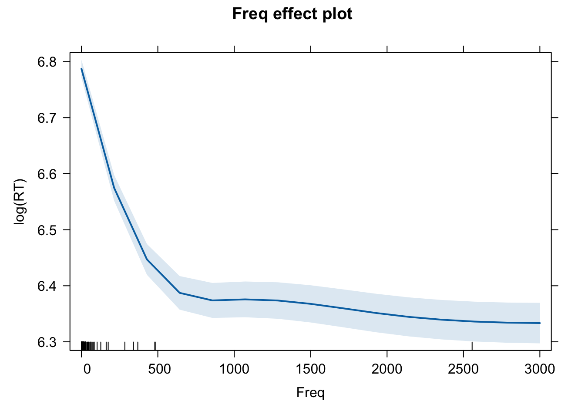
21.5.1 Plotting effects
Plot contributions of individual variable values:
21.5.2 Plotting predictions
Code
plot(ggeffect(rt.lm2, "Freq"), residuals = TRUE) + geom_line(col = "steelblue")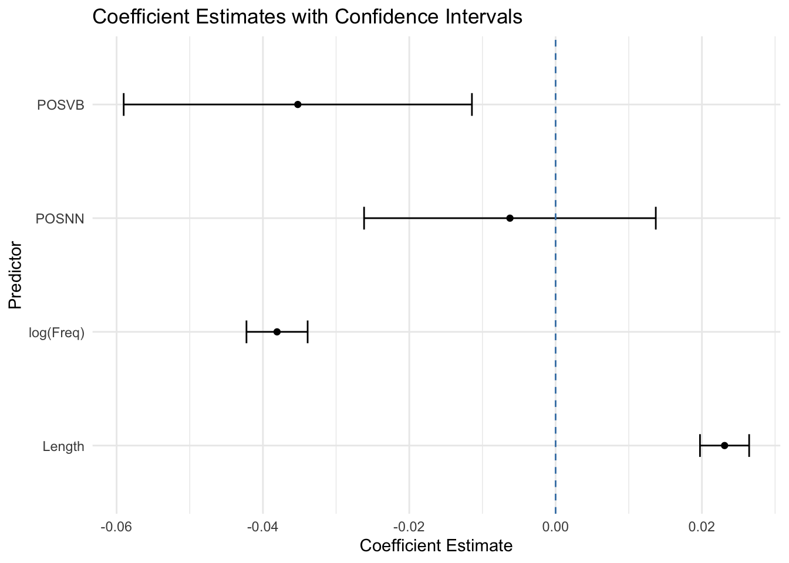
Code
plot(ggeffect(rt.lm2, "POS"), residuals = TRUE) + geom_line(col = "steelblue")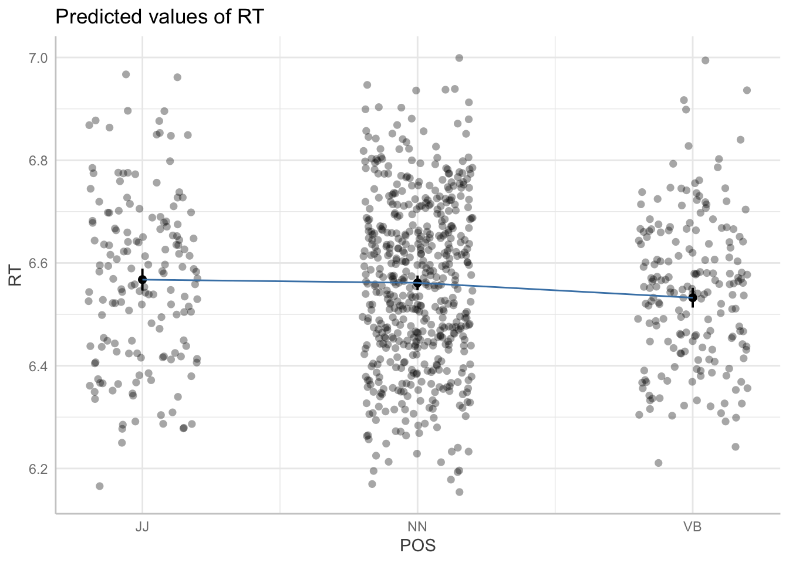
Code
plot(ggeffect(rt.lm2, "Length"), residuals = TRUE) + geom_line(col = "steelblue")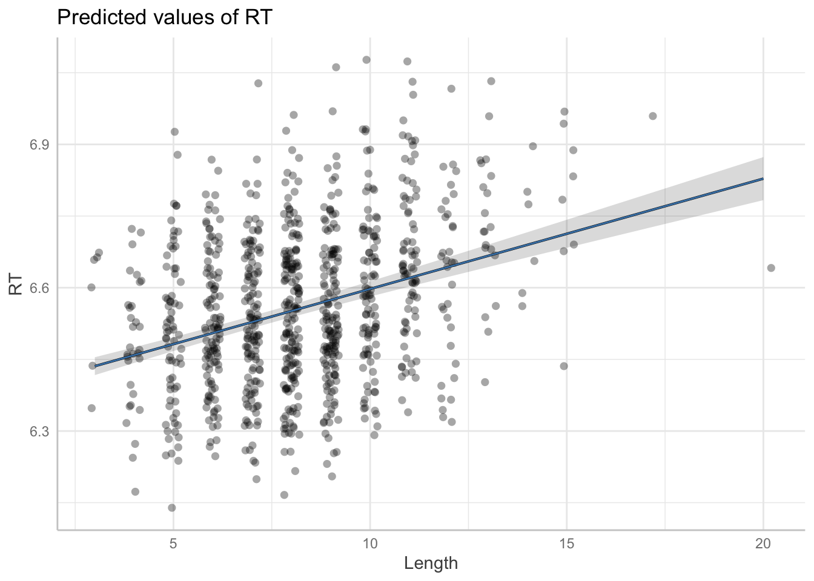
Code
#ggarrange(eff1, eff2, eff3)21.6 Model assumptions and diagnostics
As a parametric method, linear regression makes numerous assumptions about the training data. It is, therefore, essential to run further tests to rule out possible violations. Among other things, the model assumptions include:
- A linear relationship between the response and the quantitative predictors: The residuals should not display a clear pattern. For this reason, it is recommended to use component residual plots (e.g.,
crPlot()from thecarlibrary) for the visual identification of potentially non-linear trends.
Code
library(car)
# pink line = main tendency vs. blue line = slope coefficients;
# some minor non-linearity can be observed
crPlot(rt.lm2, var = "log(Freq)") 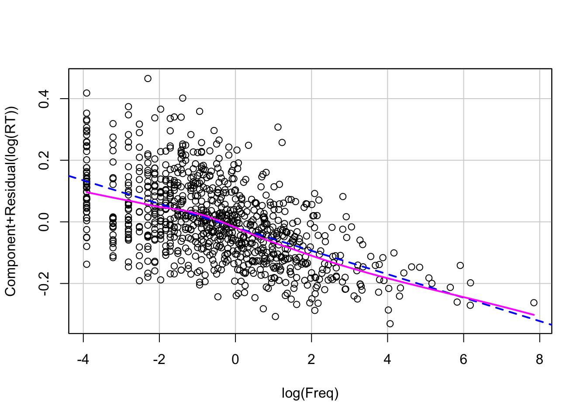
Code
crPlot(rt.lm2, var = "POS")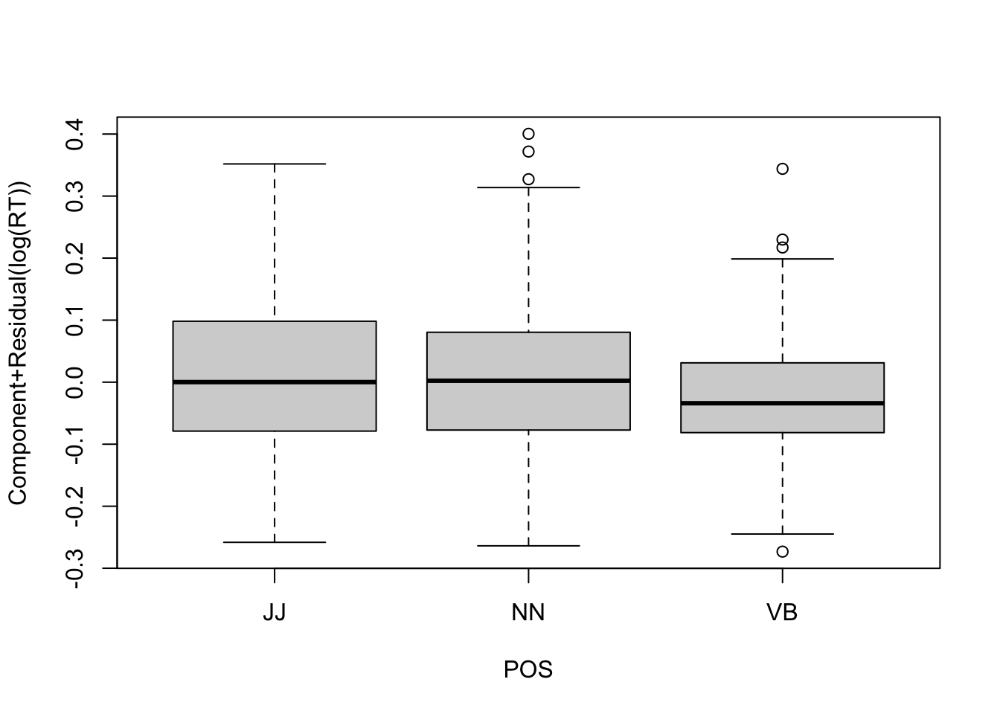
Code
crPlot(rt.lm2, var = "Length") # potentially problematic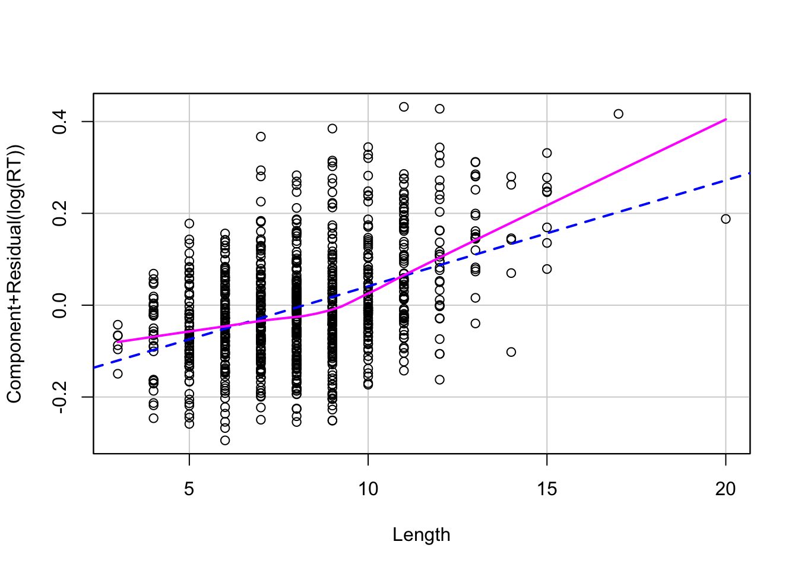
- No heteroscedasticity (i.e, non-constant variance of error terms): Visually, a violation of this assumption becomes apparent if the residuals form a funnel-like shape. It is also possible to conduct a non-constant variance test
ncvTest(): If it returns \(p\)-values < 0.05, it suggests non-constant variance.
Code
plot(rt.lm2, which = 1)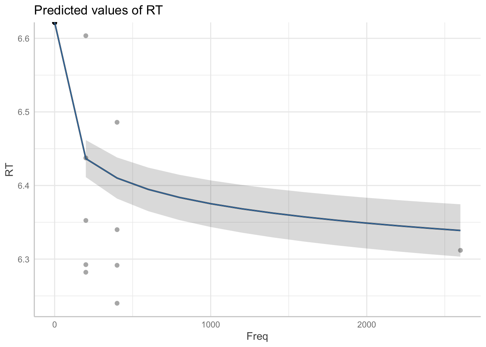
Code
ncvTest(rt.lm2) # significant, meaning that errors do not vary constantlyNon-constant Variance Score Test
Variance formula: ~ fitted.values
Chisquare = 30.0101, Df = 1, p = 4.298e-08- No multicollinearity: Predictors should not be correlated with each other. In the model data, correlated variables have unusually high standard errors, thereby decreasing the explanatory power of both the coefficients and the model as a whole. Another diagnostic measure are variance inflation factors (VIF-scores); predictors with VIF scores > 5 are potentially collinear. They can be computed using the
vif()function.
Code
vif(rt.lm2) # vif < 5 indicates that predictors are not correlated GVIF Df GVIF^(1/(2*Df))
log(Freq) 1.150140 1 1.072446
POS 1.026925 2 1.006664
Length 1.151054 1 1.072872- Normally distributed residuals: The residuals should follow the normal distribution. Usually, a visual inspection using
qqnorm()is sufficient, but the Shapiro-Wilke testshapiro.test()can also be run on the model residuals. Note that a \(p\)-value below 0.05 provides evidence for non-normality.
Code
qqnorm(rt.lm2$residuals) # or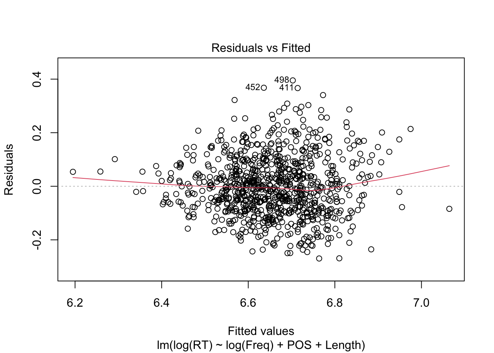
Code
plot(rt.lm2, which = 2)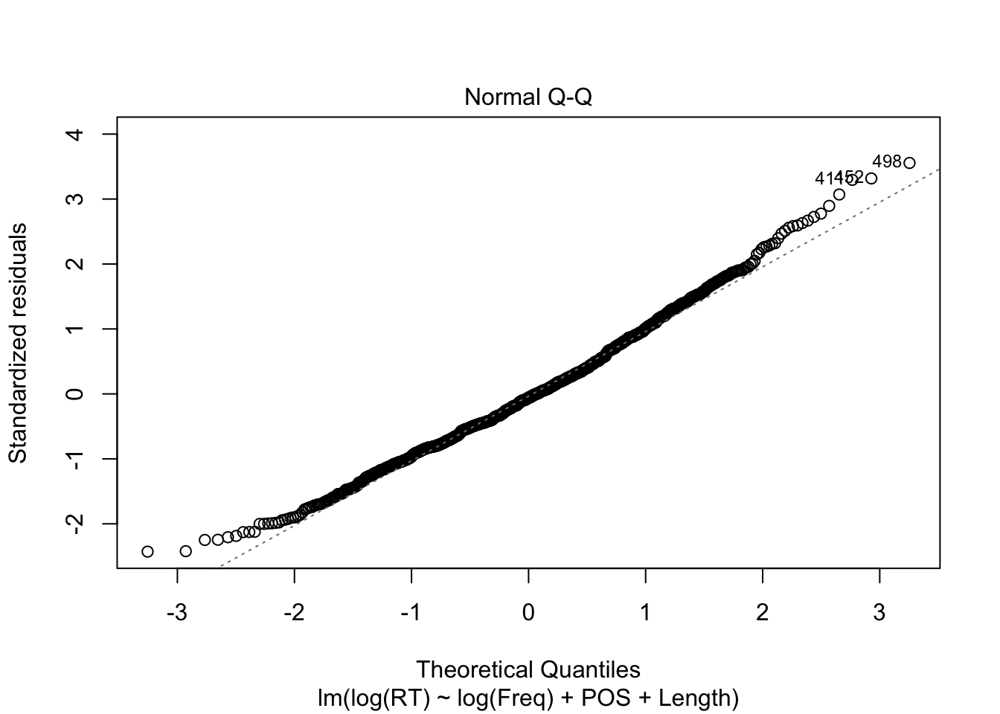
Code
shapiro.test(residuals(rt.lm2)) # residuals are not normally distributed because p < 0.05
Shapiro-Wilk normality test
data: residuals(rt.lm2)
W = 0.99062, p-value = 2.139e-05
Important
Beside the points mentioned above, it is always recommend to examine the model with regard to
- outliers that might skew the regression estimates,
Code
influencePlot(rt.lm2, id.method = "identify")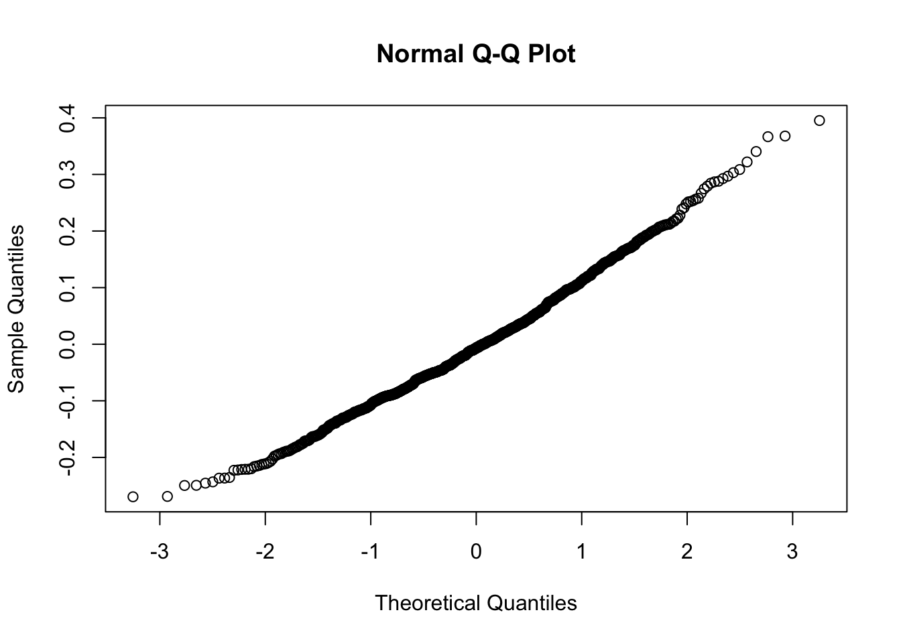
StudRes Hat CookD
16 0.4910868 0.027128347 0.001346143
207 -0.7674391 0.030963411 0.003765568
452 3.3366052 0.009338916 0.020749639
498 3.5794954 0.004047706 0.010275907
660 3.0847082 0.008750676 0.016638370- interactions, i.e., combined effects of predictors, and
Code
rt.lm.int <- lm(log(RT) ~ log(Freq) + POS + Length + log(Freq):Length, data = ELP)
summary(rt.lm.int)
Call:
lm(formula = log(RT) ~ log(Freq) + POS + Length + log(Freq):Length,
data = ELP)
Residuals:
Min 1Q Median 3Q Max
-0.27355 -0.07723 -0.00651 0.06623 0.39971
Coefficients:
Estimate Std. Error t value Pr(>|t|)
(Intercept) 6.4669304 0.0171836 376.343 < 2e-16 ***
log(Freq) -0.0243748 0.0062631 -3.892 0.000107 ***
POSNN -0.0054973 0.0101366 -0.542 0.587735
POSVB -0.0344559 0.0120992 -2.848 0.004506 **
Length 0.0217620 0.0018007 12.085 < 2e-16 ***
log(Freq):Length -0.0017681 0.0007606 -2.325 0.020319 *
---
Signif. codes: 0 '***' 0.001 '**' 0.01 '*' 0.05 '.' 0.1 ' ' 1
Residual standard error: 0.1111 on 874 degrees of freedom
Multiple R-squared: 0.4816, Adjusted R-squared: 0.4786
F-statistic: 162.4 on 5 and 874 DF, p-value: < 2.2e-16Code
# ANOVA (analysis of variance)
## Compare interaction model with main effects model
anova(rt.lm.int, rt.lm2) # interaction term improves the modelAnalysis of Variance Table
Model 1: log(RT) ~ log(Freq) + POS + Length + log(Freq):Length
Model 2: log(RT) ~ log(Freq) + POS + Length
Res.Df RSS Df Sum of Sq F Pr(>F)
1 874 10.792
2 875 10.858 -1 -0.066726 5.404 0.02032 *
---
Signif. codes: 0 '***' 0.001 '**' 0.01 '*' 0.05 '.' 0.1 ' ' 1- overfitting, which results in poor model performance outside the training data.
Code
library("rms")
# Refit the model with ols(), which is equivalent to lm()
ols.rt <- ols(log(RT) ~ log(Freq) + POS + Length, data = ELP, x = TRUE, y = TRUE)
# Cross-validate
ols.val <- validate(ols.rt, bw = TRUE, B = 200) # Perform 200 random resampling iterations (= bootstrapping); compare model performance on training vs. test (= new) data. The slope optimism should be below 0.05 to rule out overfitting.
Backwards Step-down - Original Model
No Factors Deleted
Factors in Final Model
[1] Freq POS LengthCode
ols.val[,1:5] # The model does not overfit. index.orig training test optimism index.corrected
R-square 0.47839094 0.48018549 0.47545976 0.0047257363 0.47366520
MSE 0.01233904 0.01224972 0.01240838 -0.0001586524 0.01249769
g 0.11875152 0.11875584 0.11855692 0.0001989261 0.11855260
Intercept 0.00000000 0.00000000 0.01792553 -0.0179255255 0.01792553
Slope 1.00000000 1.00000000 0.99725477 0.0027452325 0.99725477